“《贝叶斯统计及其在Python中的实现》 · Bayesian Statistics with Python”
“南京师范大学心理学院 · School of Psychology, Nanjing Normal University”
学完本讲，你应该能够：
本课程所有计算演示与作业都将基于 R 真实运行。
bin/ 进入对应平台：
windows/ → 下载 R-4.x.x-win.exe 并安装macosx/ → Apple Silicon 芯片选 arm64 版本，Intel 芯片选 x86_64 版本能输出版本信息即安装成功。
两者功能对本课程等价，选一个即可，不必都装。
data/replicated_language_cleaned.csvdata/...）才能正常工作把报错信息、运行环境（操作系统 + R 版本）一起贴出来，问题解决得更快。
来看一个“推测游戏”（例子改编自 McElreath, Statistical Rethinking）：
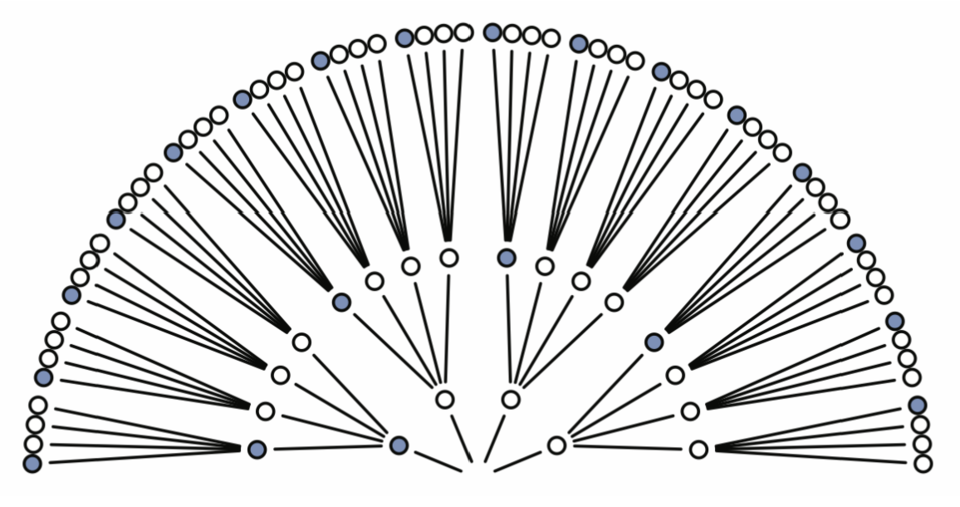
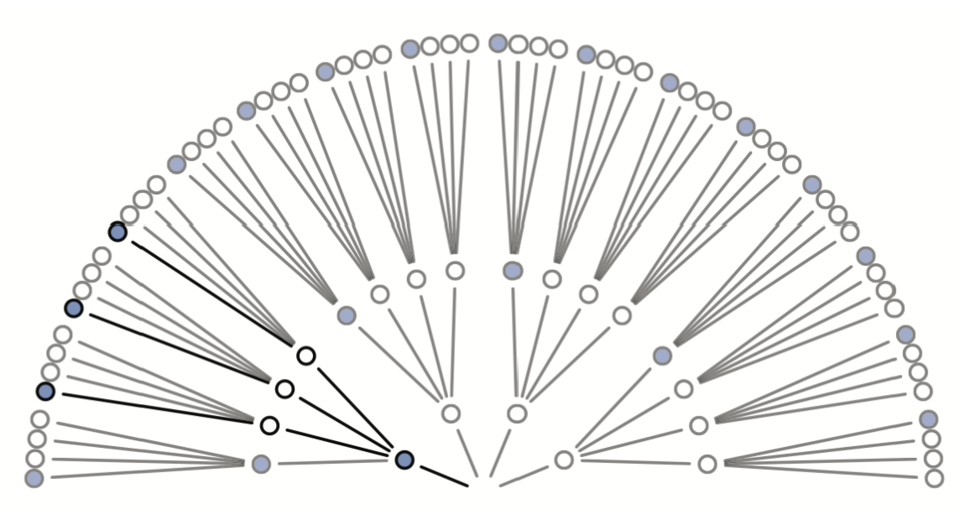
（在“蓝白白白”下：第 1 次蓝有 1 种 × 第 2 次白有 3 种 × 第 3 次蓝有 1 种 = 3 种方式）
同样的计数方法，对 5 种推测各做一遍：在每种推测下，能产生“蓝白蓝”这一数据的方式有多少种？
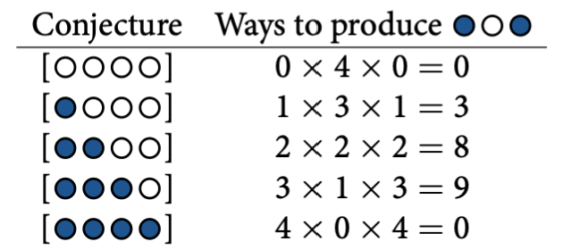
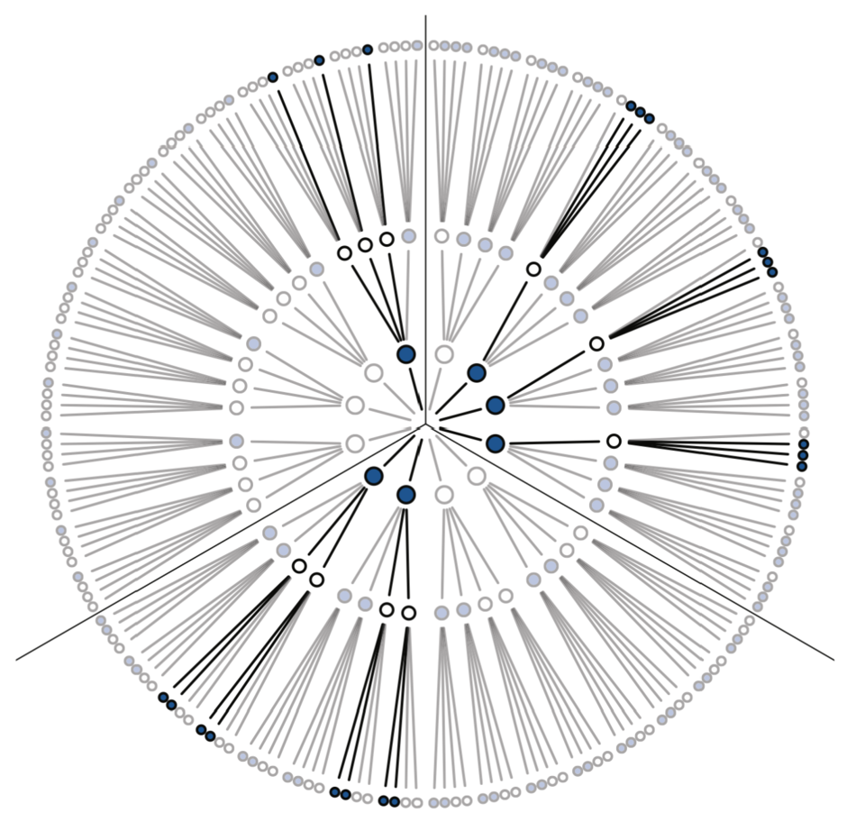
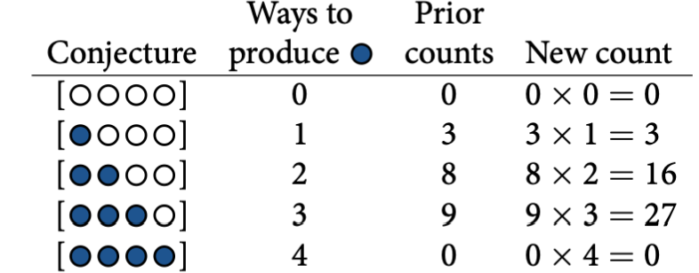
统计中更常用概率而不是原始计数——办法是让所有推测的概率加起来等于 1：
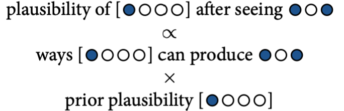
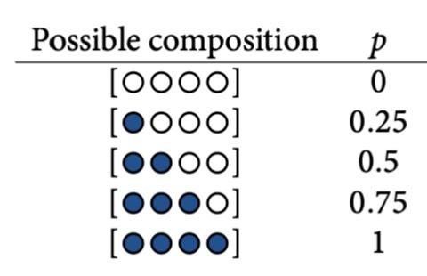
| 计数视角 | 术语 | 记号 |
|---|---|---|
| ways：假设 \(\theta\) 能产生数据 \(D\) 的方式数 | 似然 (likelihood) | \(P(D \mid \theta)\) |
| 数据之前对 \(\theta\) 的信念 | 先验 (prior) | \(P(\theta)\)，本例 = 0.2 |
| 所有 (似然 × 先验) 的总和 | 证据 (evidence)，即归一化常数 | \(P(D)\) |
| 数据之后更新过的信念 | 后验 (posterior) | \(P(\theta \mid D)\) |
\[ P(\theta \mid D) = \frac{P(D\mid \theta)\, P(\theta)}{P(D)} = \frac{\text{ways} \times \text{prior}}{\text{所有 (ways × prior) 之和}} \]
以 \(\theta = 0.5\)（“蓝蓝白白”）为例：
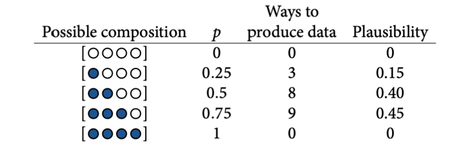
| \(\theta\) | 似然 \(P(\text{蓝}\mid\theta)=\theta\) | 新先验（= 旧后验） | 乘积 | 新后验 |
|---|---|---|---|---|
| 0 | 0 | 0 | 0 | 0 |
| 0.25 | 0.25 | 0.15 | 0.0375 | 0.065 |
| 0.50 | 0.50 | 0.40 | 0.2000 | 0.348 |
| 0.75 | 0.75 | 0.45 | 0.3375 | 0.587 |
| 1 | 1 | 0 | 0 | 0 |
数据更新为“蓝白蓝蓝”后，第 15 页（计数）与第 20 页（概率表）殊途同归：
为什么一致？
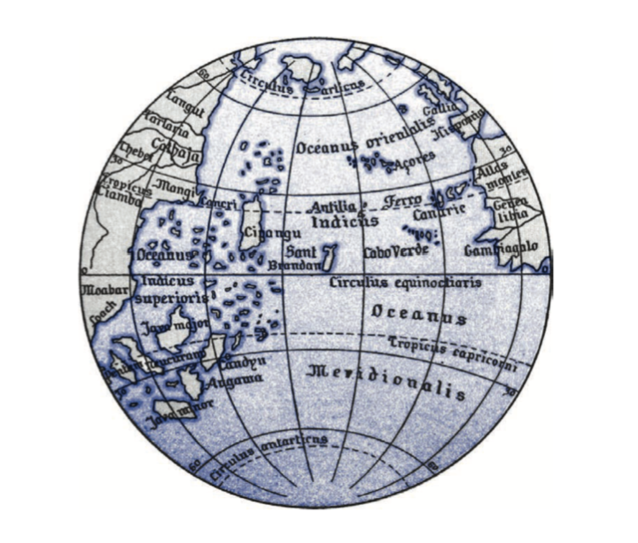
在 Part 2 中，我们用 \(\theta\) 表示蓝色小球占比，\(\theta\) 只有 5 种离散取值。同样的贝叶斯更新逻辑，现在用于一个真实的心理学场景：
假设一个有实力、有经费的团队计划对 6 项研究进行重复实验，想知道“能成功重复多少项”。
🤔 即便团队的真实水平约为 \(\theta = 50\%\)，\(Y=0\) 到 \(Y=6\) 每种结果的可能性分别是多少？
每次重复实验只有两种结果（成功 vs 失败），\(n=6\) 次独立实验的成功次数 \(Y\) 服从二项分布：
\[ f(y|\theta) = \binom{n}{y}\, \theta^{y}(1-\theta)^{n-y} \qquad y \in \{0,1,\dots,n\}, \quad \binom{n}{y}=\frac{n!}{y!(n-y)!} \]
模型的前提假设：
对应 Python 实现见
Lecture2.py：scipy.stats.binom.pmf(y, n, p)。
以 \(\theta = 0.5,\ n = 6\) 为例，逐项计算 \(f(y|\theta)\)：
y prob
0 0.0156
1 0.0937
2 0.2344
3 0.3125
4 0.2344
5 0.0937
6 0.0156所有概率之和 = 1 PMF 描述离散型随机变量取各个可能值时的概率：\(f(y) = P(Y = y)\)。
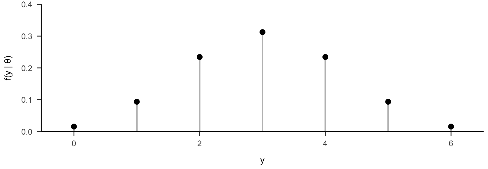
当 \(\theta = 0.5\) 时，\(y=3\)（成功 3 项）的概率最高：\(f(3|0.5)=0.3125\)。
并非所有人都认为成功率是 50%：
不同 \(\theta\) 意味着对 \(Y\) 的不同预期。分别计算三种 \(\theta\) 下的 \(f(y|\theta)\)：
y 中立派 θ=0.5 乐观派 θ=0.8 悲观派 θ=0.2
0 0.0156 0.0001 0.2621
1 0.0937 0.0015 0.3932
2 0.2344 0.0154 0.2458
3 0.3125 0.0819 0.0819
4 0.2344 0.2458 0.0154
5 0.0937 0.3932 0.0015
6 0.0156 0.2621 0.0001plots <- list()
titles <- c("Team itself (θ = 0.5)", "Optimists (θ = 0.8)", "Pessimists (θ = 0.2)")
for (i in seq_along(p_values)) {
plots[[i]] <- ggplot(
data.frame(y = y, lik = likelihoods[, i]),
aes(x = y, y = lik)
) +
geom_segment(aes(xend = y, yend = 0), color = "gray", linewidth = 1) +
geom_point(size = 3) +
labs(title = titles[i], y = "f(y | θ)") +
xlim(-0.2, 6.2) +
scale_y_continuous(expand = c(0, 0), limits = c(0, 0.45)) +
papaja::theme_apa()
}
gridExtra::grid.arrange(grobs = plots, ncol = 3)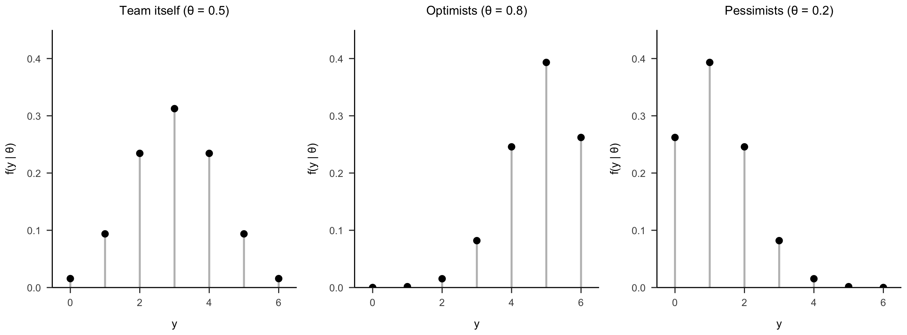
假设团队 6 项研究只成功复现了 1 项。在三派设定的成功率下，这件事的可能性分别是：
theta L_pi_y1
0.5 0.0937
0.8 0.0015
0.2 0.3932当数据固定为 \(y=1\) 时，把它看成 \(\theta\) 的函数：
\[ f(Y=1|\theta) = \binom{6}{1} \theta^1 (1-\theta)^{5} = 6\theta(1-\theta)^5 = L(\theta | y=1) \]
| \(\theta\) | 0.2 | 0.5 | 0.8 |
|---|---|---|---|
| \(L(\theta \mid y=1)\) | 0.3932 | 0.0938 | 0.0015 |
注意（与 Part 2 一致）： 1. 似然函数只随 \(\theta\) 变化，数据 \(y=1\) 已经固定； 2. 不同 \(\theta\) 下似然的总和不等于 1——它只是相对支持度的比较。
\[ Y \mid \theta \sim \text{Bin}(6, \theta), \qquad f(y|\theta) = \binom{6}{y}\theta^y(1-\theta)^{6-y} \]
y <- 0:6
theta_values <- c(0.2, 0.5, 0.8)
plots <- list()
for (i in seq_along(theta_values)) {
pi_v <- theta_values[i]
lik_y <- dbinom(y, size = 6, prob = pi_v)
y1_lik <- dbinom(1, size = 6, prob = pi_v)
p <- ggplot(data.frame(y = y, lik = lik_y), aes(x = y, y = lik)) +
geom_segment(aes(xend = y, yend = 0), color = "black") +
geom_segment(x = 1, y = 0, xend = 1, yend = y1_lik, color = "red", linewidth = 1.6) +
geom_point(size = 3) +
labs(title = paste0("Bin(6, ", pi_v, ")"), x = "y") +
scale_y_continuous(expand = c(0, 0), limits = c(0, 0.5)) +
papaja::theme_apa()
plots[[i]] <- p
}
gridExtra::grid.arrange(grobs = plots, ncol = 3)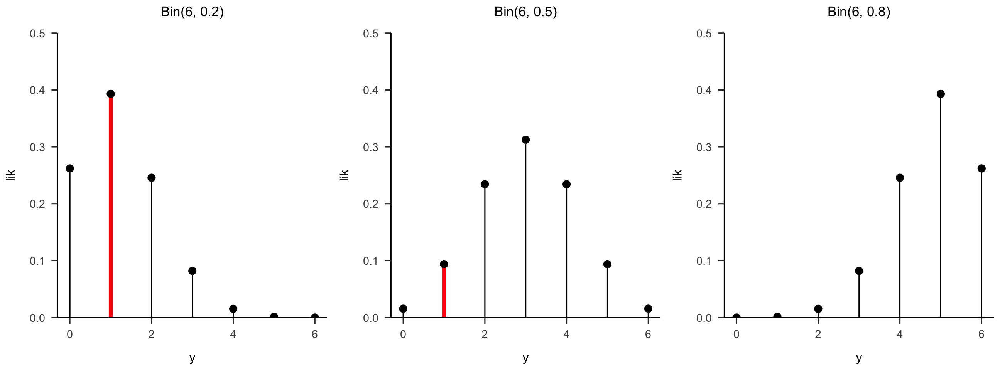
红色竖线 = 同一数据 \(y=1\) 在不同 \(\theta\)（模型）下的似然：从左到右急剧下降——数据强烈支持低成功率。
像 Part 2 一样，我们也可以对“哪个 \(\theta\) 更可能”赋予先验信念。假如我们总体上偏乐观、但不排除其他观点：
| \(\theta\) | 0.2 | 0.5 | 0.8 | Total |
|---|---|---|---|---|
| \(f(\theta)\) | 0.10 | 0.25 | 0.65 | 1 |
\(\theta\) 的取值数量也可以扩展（例如再加入非常悲观的 \(\theta=0.01\)）：
| \(\theta\) | 0.01 | 0.2 | 0.5 | 0.8 | Total |
|---|---|---|---|---|---|
| \(f(\theta)\) | 0.10 | 0.10 | 0.25 | 0.55 | 1 |
原则不变：穷尽所有可能、和为 1 —— 这就是 \(\theta\) 的先验模型。
团队最终只成功复现 1 项。先验 \(f(\theta)\) 遇到似然 \(L(\theta|y=1)\)，按贝叶斯公式更新：
\[ f(\theta|y{=}1) = \frac{f(\theta)\,L(\theta|y{=}1)}{f(y{=}1)} = \frac{f(\theta)\,L(\theta|y{=}1)}{\sum_{\text{all } \theta} f(\theta)\,L(\theta|y{=}1)} \]
先计算分母：\(f(y{=}1) = 0.10\times0.3932 + 0.25\times0.0938 + 0.65\times0.0015 \approx 0.0637\)
| \(\theta\) | \(f(\theta)\) | \(L(\theta\mid y{=}1)\) | \(f(\theta)L(\theta\mid y{=}1)\) | \(f(\theta\mid y{=}1)\) |
|---|---|---|---|---|
| 0.2 | 0.10 | 0.3932 | 0.03932 | 0.617 |
| 0.5 | 0.25 | 0.0938 | 0.02345 | 0.368 |
| 0.8 | 0.65 | 0.0015 | 0.00098 | 0.015 |
团队“高成功率”（\(\theta=0.8\)）的信念从 0.65 骤降到 0.015——只成功 1 项是反对高成功率的强证据。
# 参数取值与先验
theta_values <- c(0.2, 0.5, 0.8)
prior_theta <- c(0.10, 0.25, 0.65)
# 真实似然：观察到 y = 1
lik_theta <- dbinom(1, size = 6, prob = theta_values)
# 后验 = 先验 × 似然 / 归一化
post_theta <- prior_theta * lik_theta / sum(prior_theta * lik_theta)
plot_pi <- function(title, vals, ymax = 0.7) {
ggplot(data.frame(theta = theta_values, v = vals), aes(x = theta, y = v)) +
geom_segment(aes(xend = theta, yend = 0), color = "black", linewidth = 1.2) +
geom_point(size = 3) +
labs(title = title, x = expression(theta), y = "Probability") +
scale_y_continuous(expand = c(0, 0), limits = c(0, ymax)) +
scale_x_continuous(breaks = theta_values, limits = c(0.1, 0.9)) +
papaja::theme_apa()
}
p1 <- plot_pi("Prior f(θ)", prior_theta)
p2 <- plot_pi("Likelihood L(θ|y=1)", lik_theta)
p3 <- plot_pi("Posterior f(θ|y=1)", post_theta)
gridExtra::grid.arrange(grobs = list(p1, p2, p3), ncol = 3)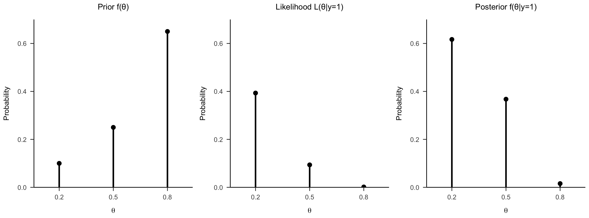
分母 \(f(y)\) 是一个与 \(\theta\) 无关的归一化常数：
\[ f(\theta | y) = \frac{f(\theta)L(\theta|y)}{f(y)} \;\propto\; f(\theta)\,L(\theta|y) \qquad \Rightarrow \qquad \text{posterior} \propto \text{prior} \times \text{likelihood} \]
省略分母后（未归一化）：
三者总和 0.0637，比例与完整后验（0.617/0.368/0.015）完全一致。
😜 这个性质很重要：分母的计算往往需要遍历/积分所有参数。如果不算分母也能得到后验，那后面课程介绍的 MCMC 方法就会非常实用。
# 未归一化与归一化后验
unnorm <- c(0.03932, 0.02345, 0.00098)
normed <- unnorm / sum(unnorm)
posterior_data <- data.frame(
theta = rep(theta_values, 2),
probability = c(normed, unnorm),
type = rep(c("normalized", "unnormalized"), each = 3)
)
ggplot(posterior_data, aes(x = theta, y = probability)) +
geom_segment(aes(xend = theta, yend = 0), color = "black", linewidth = 1.4) +
geom_point(size = 3) +
facet_wrap(~ type, scales = "free_y",
labeller = labeller(type = c(normalized = "Normalized",
unnormalized = "Unnormalized"))) +
labs(x = expression(theta), y = "Probability") +
scale_x_continuous(breaks = theta_values) +
papaja::theme_apa() +
theme(strip.text = element_text(size = 15))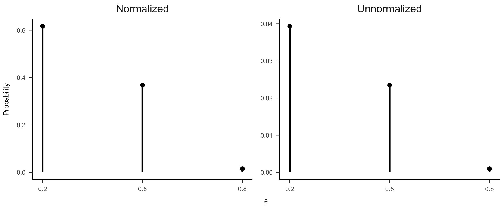
两条曲线只差一个常数——形状（比例关系）完全相同。
当 \(\theta\) 的取值很多（甚至连续）时，分母的求和/积分会变得困难。另一个思路是：不解析计算，直接抽样。
# 1. 定义可能的成功率与先验
replicated <- data.frame(theta = c(0.2, 0.5, 0.8))
prior_theta <- c(0.10, 0.25, 0.65)
# 2. 从先验抽取 10000 个 θ，并在每个 θ 下模拟成功次数 y
set.seed(84735)
sim_idx <- sample(1:3, size = 10000, replace = TRUE, prob = prior_theta)
replicated_sim <- replicated[sim_idx, , drop = FALSE]
replicated_sim$y <- rbinom(nrow(replicated_sim), size = 6, prob = replicated_sim$theta)
head(replicated_sim, 10) theta y
2 0.5 3
2.1 0.5 3
3 0.8 4
1 0.2 1
2.2 0.5 3
3.1 0.8 3
3.2 0.8 6
3.3 0.8 4
2.3 0.5 3
3.4 0.8 4ggplot(replicated_sim, aes(x = y)) +
geom_bar(aes(y = after_stat(prop), group = 1),
fill = "skyblue", color = "black", width = 0.7) +
facet_wrap(~ theta, labeller = label_both) +
scale_x_continuous(breaks = 0:6, limits = c(-0.5, 6.5)) +
scale_y_continuous(expand = c(0, 0)) +
labs(y = "f(y | θ)") +
papaja::theme_apa() +
theme(strip.text = element_text(size = 15))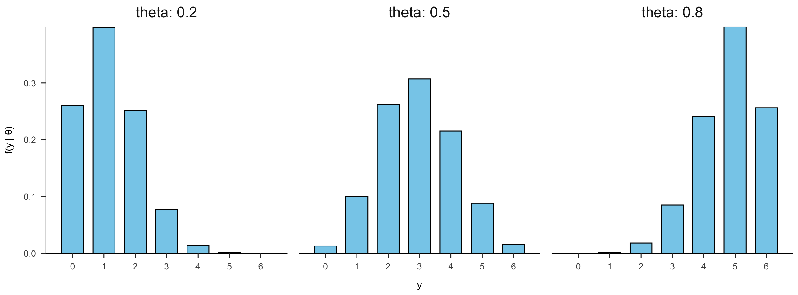
每个面板内的条形 = 给定 \(\theta\) 时 \(Y\) 的条件分布——与前面手算的 PMF 形状一致。
# 解析后验 (来自前面的精确计算)
exact_post <- data.frame(
theta = c(0.2, 0.5, 0.8),
proportion = c(0.617, 0.368, 0.015),
type = "exact"
)
sim_post <- data.frame(
theta = post_counts$theta,
proportion = post_counts$proportion,
type = "simulation"
)
ggplot(rbind(exact_post, sim_post), aes(x = factor(theta), y = proportion, fill = type)) +
geom_col(position = position_dodge(0.7), width = 0.6) +
scale_fill_manual(values = c("exact" = "gray50", "simulation" = "skyblue")) +
labs(x = expression(theta), y = "Posterior probability", fill = "approach") +
papaja::theme_apa()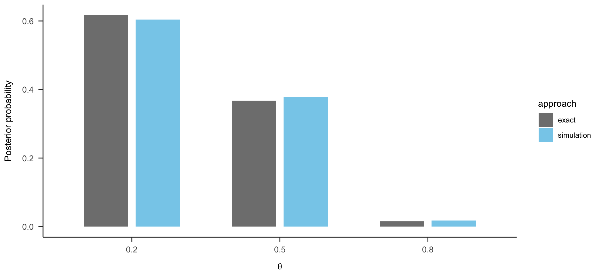
回顾本讲的两个推断问题：
🤔 频率学派（经典统计）会怎样回答？它们与贝叶斯学派的根本分歧在哪里？
带着问题进入 Part 4；相关练习见课程的闯关题。
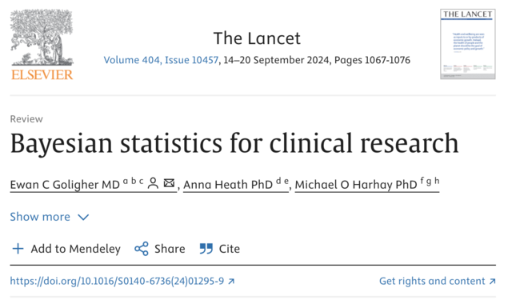
Goligher, E. C., Heath, A., & Harhay, M. O. (2024). Bayesian statistics for clinical research. The Lancet, 404(10457), 1067–1076.
本例中：\(p = 0.09\) → 未达到 0.05 → 不拒绝 \(H_0\) → 结论“证据不足”。
概率是对不确定性的主观度量，因此可以直接谈论“假设为真的概率”：
本例中：不同的合理先验都得到 \(H_1\) 后验 ≥ 88%，故结论是“强支持 ECMO”。
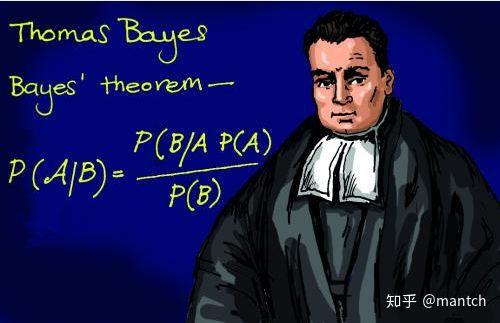
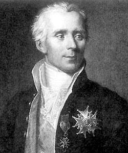
| 频率学派 (Frequentist) | 贝叶斯学派 (Bayesian) |
|---|---|
| 概率 = 无限重复试验中的频率 | 概率 = 对假设的信念度量 |
| 假设是固定的，数据是随机的 | 假设是随机的，数据是固定的 |
| 通过 \(p\) 值检验是否拒绝 \(H_0\) | 用先验 + 数据更新出后验概率 |
| 置信区间：重复试验中 95% 覆盖真值 | 可信区间：参数落在区间内的概率为 95% |
| 只基于当前数据，不考虑先验 | 结合历史信息/专家意见 |
| 实验设计固定，不能中途调整 | 支持自适应设计与决策 |
| 无法直接支持 \(H_0\) | 可直接比较多个假设 |
来源：Goligher et al. (2024)
主观性是相对的：
频率学派 - 推断依赖参数的抽样分布（long-run 重复实验的假想）； - \(p\) 值与置信区间都建立于“可无限重复抽样”之上； - 现实中往往只收集一次数据，“无限重复”只是一个思想实验。
贝叶斯学派 - 参数本身就是分布，不确定性直接进入推断； - 只需这一次数据，即可更新信念。
置信区间 (CI) vs 可信区间 (CrI)：没有免费的午餐——两派各有优势与局限。
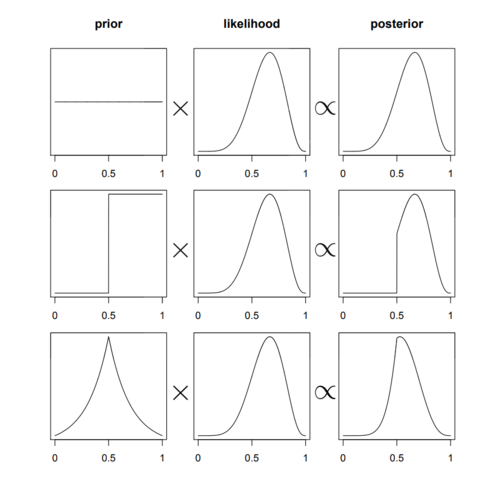
这些局限推动了学界对贝叶斯方法（以及更严谨的频率学派实践）的重视。
📌 预告第 3 讲：连续型参数（β 分布）与更一般的贝叶斯建模。
本讲的示例均有对应的 Python 实现，整理在课程根目录的 Lecture2.py 中：
ways = [0, 3, 8, 9, 0] → plaus = ways / sum(ways) 得后验；顺序更新用“似然 × 旧后验”再归一化（约 5 行 numpy）；scipy.stats.binom.pmf(y, n, p) 与 10000 次模拟（np.random.seed(84735) 保持一致）；运行方式：
python Lecture2.py（需已安装 pandas、numpy、matplotlib、scipy；建议用和鲸平台pyBayesian环境或本地 conda 环境）。